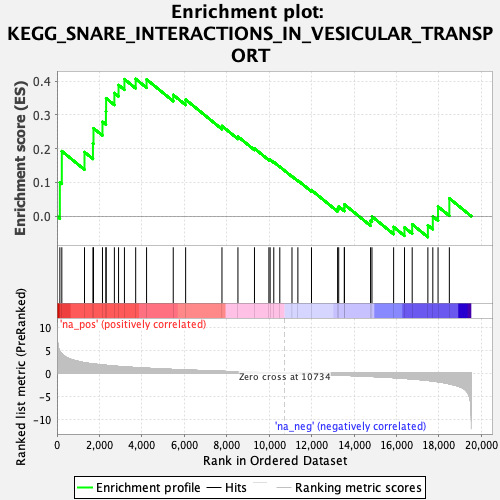

| | | Dataset | PFS |
| Phenotype | NoPhenotypeAvailable |
| Upregulated in class | na_pos |
| GeneSet | KEGG_SNARE_INTERACTIONS_IN_VESICULAR_TRANSPORT |
| Enrichment Score (ES) | 0.40639436 |
| Normalized Enrichment Score (NES) | 1.2850249 |
| Nominal p-value | 0.11940298 |
| FDR q-value | 1.0 |
| FWER p-Value | 1.0 |
Table: GSEA Results Summary

Fig 1: Enrichment plot: KEGG_SNARE_INTERACTIONS_IN_VESICULAR_TRANSPORT
Profile of the Running ES Score & Positions of GeneSet Members on the Rank Ordered List
| SYMBOL | RANK IN GENE LIST | RANK METRIC SCORE | RUNNING ES | CORE ENRICHMENT | | 1 | SEC22B | 135 | 4.726 | 0.1006 | Yes |
| 2 | STX6 | 227 | 4.253 | 0.1927 | Yes |
| 3 | VAMP5 | 1296 | 2.289 | 0.1899 | Yes |
| 4 | STX19 | 1694 | 2.032 | 0.2158 | Yes |
| 5 | VAMP7 | 1720 | 2.017 | 0.2604 | Yes |
| 6 | STX11 | 2143 | 1.794 | 0.2796 | Yes |
| 7 | STX12 | 2306 | 1.722 | 0.3104 | Yes |
| 8 | STX2 | 2315 | 1.720 | 0.3492 | Yes |
| 9 | VTI1B | 2704 | 1.557 | 0.3647 | Yes |
| 10 | VAMP4 | 2901 | 1.479 | 0.3883 | Yes |
| 11 | SNAP47 | 3178 | 1.385 | 0.4056 | Yes |
| 12 | SNAP23 | 3708 | 1.227 | 0.4064 | Yes |
| 13 | STX8 | 4221 | 1.092 | 0.4050 | No |
| 14 | STX10 | 5478 | 0.818 | 0.3591 | No |
| 15 | STX7 | 6062 | 0.711 | 0.3454 | No |
| 16 | STX16 | 7774 | 0.424 | 0.2672 | No |
| 17 | VTI1A | 8527 | 0.319 | 0.2359 | No |
| 18 | STX1A | 9306 | 0.207 | 0.2007 | No |
| 19 | USE1 | 9986 | 0.105 | 0.1682 | No |
| 20 | YKT6 | 10044 | 0.098 | 0.1675 | No |
| 21 | BET1 | 10216 | 0.073 | 0.1604 | No |
| 22 | BET1L | 10500 | 0.033 | 0.1466 | No |
| 23 | VAMP3 | 11074 | -0.046 | 0.1183 | No |
| 24 | SNAP29 | 11352 | -0.085 | 0.1060 | No |
| 25 | GOSR1 | 11993 | -0.184 | 0.0773 | No |
| 26 | STX17 | 13224 | -0.379 | 0.0228 | No |
| 27 | VAMP8 | 13276 | -0.388 | 0.0291 | No |
| 28 | STX5 | 13542 | -0.433 | 0.0253 | No |
| 29 | STX18 | 13544 | -0.433 | 0.0351 | No |
| 30 | STX4 | 14777 | -0.670 | -0.0128 | No |
| 31 | STX3 | 14843 | -0.684 | -0.0006 | No |
| 32 | TSNARE1 | 15864 | -0.937 | -0.0316 | No |
| 33 | SNAP25 | 16376 | -1.091 | -0.0330 | No |
| 34 | VAMP1 | 16739 | -1.225 | -0.0237 | No |
| 35 | BNIP1 | 17478 | -1.538 | -0.0266 | No |
| 36 | STX1B | 17711 | -1.679 | -0.0003 | No |
| 37 | GOSR2 | 17958 | -1.826 | 0.0286 | No |
| 38 | VAMP2 | 18490 | -2.273 | 0.0531 | No |
Table: GSEA details [plain text format]
Fig 2: KEGG_SNARE_INTERACTIONS_IN_VESICULAR_TRANSPORT: Random ES distribution
Gene set null distribution of ES for KEGG_SNARE_INTERACTIONS_IN_VESICULAR_TRANSPORT